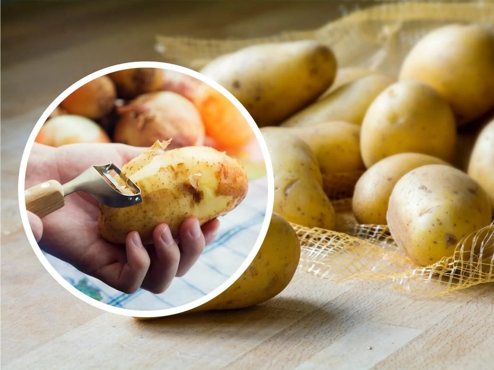
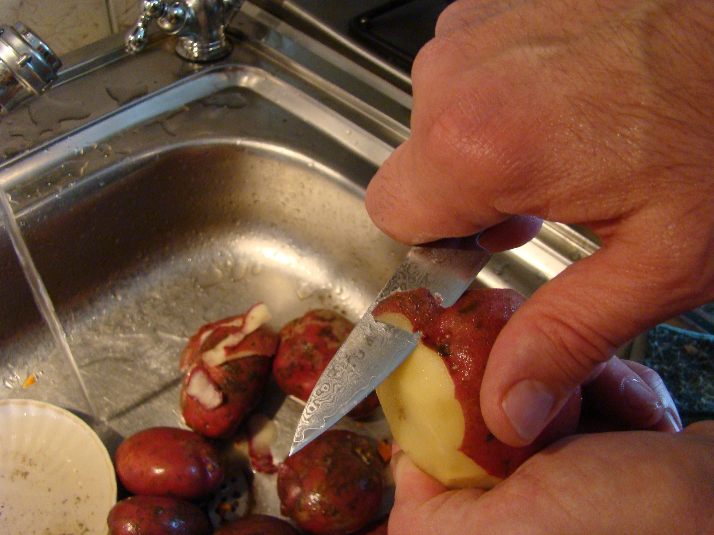
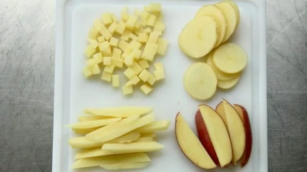
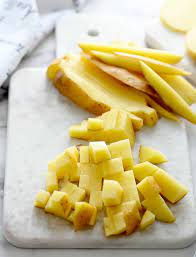
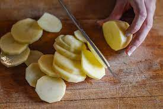
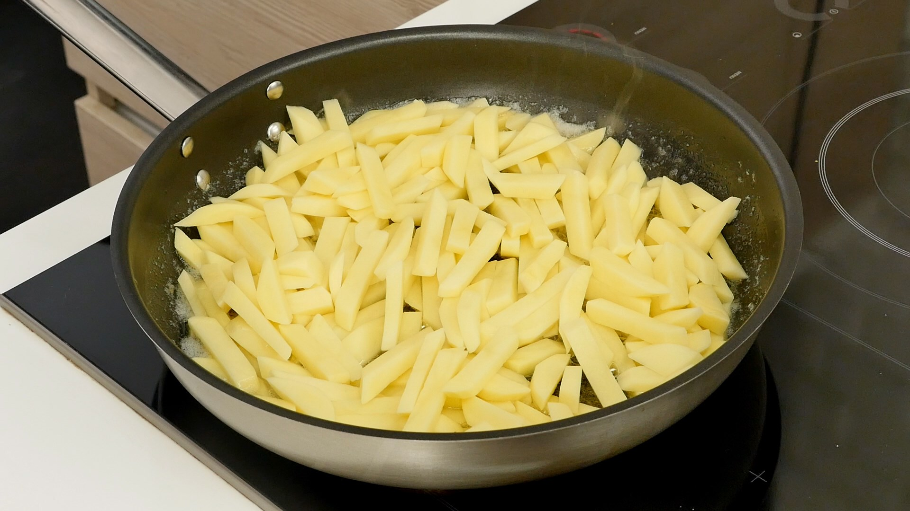
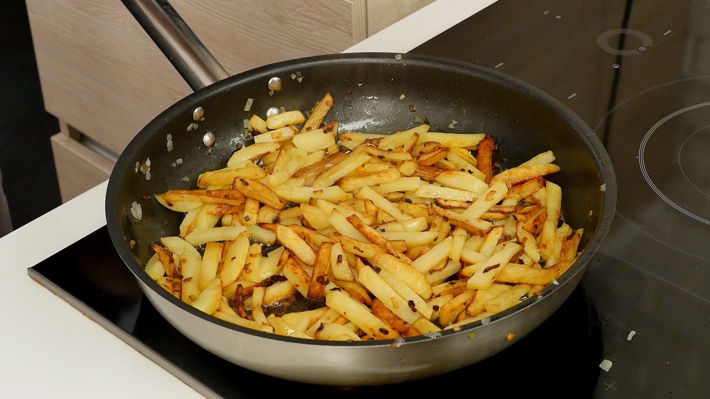
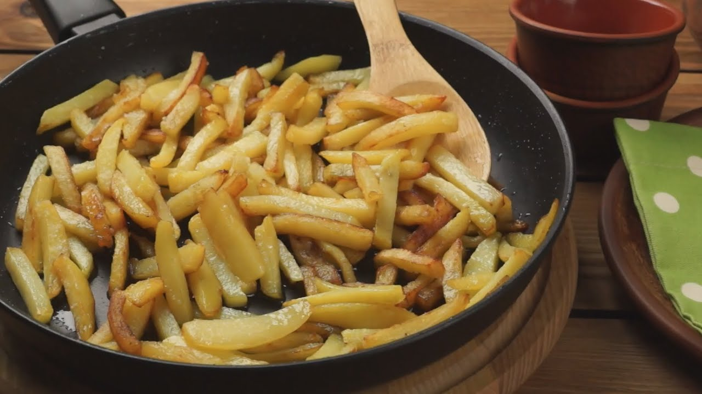
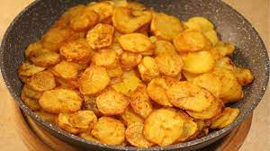

Для цього вам потрібно вибрати декілька картоплин і почистити їх ножем або овочечисткою.
 Далі потрібно ретельно промити картоплю після чого порізати на ваш смак. Наприклад як на фото:
  Після нарізання ми повині кинути порізану картоплю на підігріту сковорідку і обжарювати.На протязі 5-10 хвилин посолити і добавити спеції на свій смак.Добавивши сіль і спеції закрити сковорідку кришкою і залишити ще на 10-15 хвилин деколи помішуючу, щоб картопля не злиплался.
 У вам має вийти ось такий приблизно результат:
 Для кращого смаку можете нарізати циулю кубіками і добавити разом з сіллю і приправами на сковордіку.
Ось відео на якому можна побачити, як жарити картоплю тик